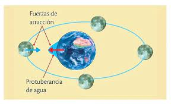

La fuerza de gravedad (o simplemente «gravedad») es una de las interacciones fundamentales de la naturaleza, que hace que cuerpos dotados de masa se atraen entre sí con mayor intensidad en la medida en que sean más voluminosos o estén más cerca unos de otros. El principio que rige esta interacción se conoce como “gravitación” o “interacción gravitatoria”, y responde en física a lo descrito por la Ley de Gravitación Universal.
Se trata de la misma atracción que ejerce la Tierra sobre los cuerpos y objetos que están cerca de ella, nosotros incluidos, y que hace a las cosas caer. También determina los movimientos de los astros espaciales (planetas orbitando al Sol o lunas y satélites artificiales orbitando a su vez dichos planetas. A diferencia de las otras interacciones fundamentales en el Universo (que son las fuerzas nucleares fuertes y débiles, y el electromagnetismo), la fuerza de gravedad predomina inexplicablemente a lo largo de enormes distancias, mientras las demás se dan en distancias mucho más cortas. La gravedad se estudia en distintos marcos teóricos dependiendo de si se trata de un enfoque mecánico (clásico) o relativista. Usualmente las unidades que se utilizan para trabajar con la gravedad son las unidades de peso como los kilogramos de fuerza, o los Newtons (N). Esto se debe a que el peso de un cuerpo es igual a su masa por la aceleración de la gravedad que la fuerza gravitatoria de la Tierra ejerce sobre él. Es decir, no hay que confundir gravedad con fuerza gravitatoria. La gravedad es una aceleración y no una fuerza como el peso. La aceleración de la gravedad en la superficie terrestre alcanza unos 9,80665 m/s2.